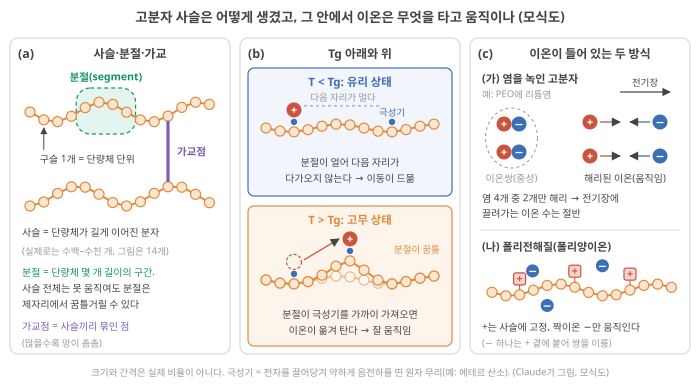
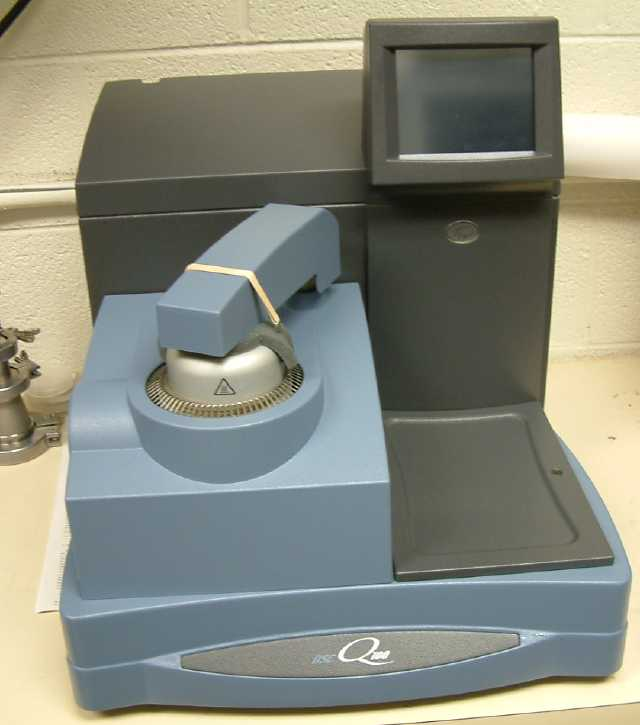
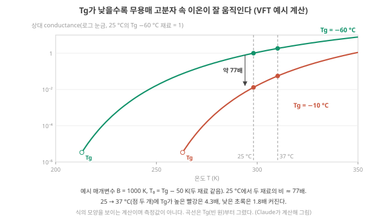
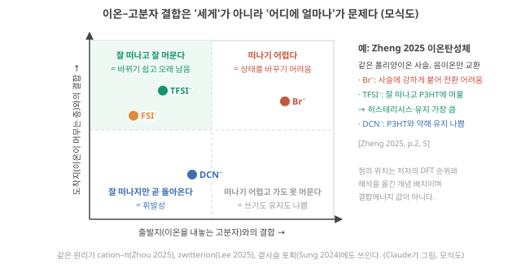
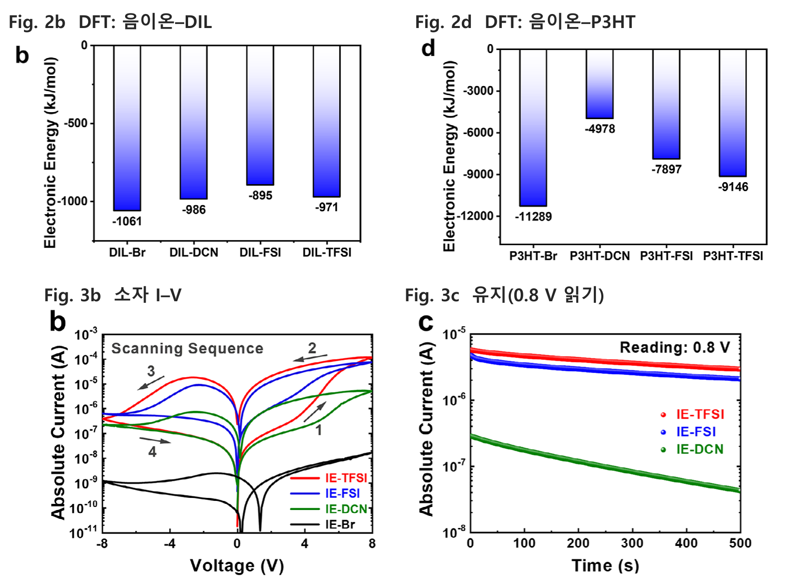

Day 41. Tg·분절 운동과 VFT, 이온쌍과 결합의 ‘떠나기·머물기’
Phase 4 · 왜 이온성 고분자인가
이번 질문 무용매 고분자에서 Tg를 바꾸면 이온의 D와 device 시간상수·온도 민감도가 얼마나 바뀌고, 이온쌍과 이온–고분자 결합은 움직이는 이온 수와 쓰기·유지를 어떻게 바꾸나?
왜 배우나 Tg가 상온에서 먼 정도로 D·τ 온도 민감도를 어림한다.
오늘의 장면 Tg·이온쌍·결합 세기 → VFT가 D, 해리가 n 변화 → σ ∝ nD, τ, 온도 민감도
오늘 반드시 Tg가 50 K 낮으면 25 °C의 D가 약 77배, τ는 1/77이다. 고분자 이완 시간 ≠ device 전기적 기억 시간이다.
나중에 봐도 됨 WLF 출처·E_app 유도 · Zheng 2025 결합 해석 · 화학 손잡이 표
넘어가는 기준 '오늘 반드시'를 내 말로 말할 수 있으면 충분합니다.
이후 쓰이는 곳 Day 43–44 conductance와 성능 · Day 49–50 온도 민감도 · Day 53–54 화학 계열 가설
지난 학습 복습
지난 학습 단위(Day 40 · 계면 충전 시간, 시간의 지도와 거꾸로 설계, 온도, 느림은 재료인가 크기인가)의 핵심을 다른 예로 확인합니다. 고르는 즉시 맞았는지와 이유가 보입니다. 틀려도 아래 학습자료는 그대로 열려 있고, 틀린 문제에는 다시 볼 곳이 붙습니다.
사전 테스트 (선택)
사전 테스트 펼치기 · 배우기 전에 짐작해 보는 문제 (선택)
학습자료
Day 35–40에서 이온 device의 시간은 "크기(\(L\))와 확산계수(\(D\))", 그리고 "어떤 메커니즘이 지배하나"로 정해진다는 데까지 왔습니다. 이번에는 고분자 연구자의 손에 가장 가까운 질문입니다. 고분자의 화학구조를 바꾸면 \(D\), 시간상수 \(\tau\), 비선형이 어떻게 바뀌고, 그것이 계산 특성으로 어떻게 이어지나?
이 질문은 고분자의 말(Tg, 가교, 이온쌍)로 시작하지만, 끝은 Phase 2–3에서 배운 계산의 말(기억 창, 비선형, 상태 수)로 가야 합니다. 그 사이를 잇는 다리가 아직 대부분 정성적이라는 것이 이번 결론이기도 합니다. 다섯 개의 질문으로 갑니다.
이 주제의 질문 순서 — 이번 Day 41에서는 구간 1–2만 읽습니다. 나머지는 Day 42에서 이어집니다(구간 번호는 원래 한 묶음이던 순서 그대로입니다).
- 사슬 운동성과 유리전이온도(Tg)는 무엇이고, 무용매 고분자 속 이온의 움직임과 어떻게 이어지나? → 구간 1
- 이온과 고분자의 상호작용(결합 세기, 이온쌍, cation–π, zwitterion, 곁사슬)은 무엇을 바꾸나? → 구간 2
- 가교밀도와 이온 농도는 무엇을 바꾸나? "더 많이"는 늘 "더 좋게"인가? (Day 42에서)
- 논문들은 화학 하나를 바꿔 무엇을 보였고, 무엇이 함께 바뀌어 결론을 흐리나? (Day 42에서)
- 화학구조 → 이온 동역학 → device 응답 → 계산 기능의 경로는 어디까지 이어져 있고 어디서 끊기나? (Day 42에서)
작은 예 하나를 끝까지 씁니다. Tg가 −10 °C인 고분자로 만든 device, 25 °C에서 시간상수 τ = 10 ms(예시)입니다. 1구간에서는 같은 크기에 Tg가 −60 °C인 고분자를 쓰면 이 τ가 얼마가 되는지, 3구간에서는 가교와 염을 늘리면 어떻게 되는지, 5구간에서는 그 τ가 2 ms 간격 과제의 기억 용량(memory capacity, MC; 정의는 Day 23 2구간)을 어떻게 바꾸는지 따라갑니다.
주 경로는 손잡이 하나, Tg입니다. Tg를 낮춘다 → 분절 운동이 빨라져 \(D\)가 커진다(VFT 식) → 시간상수 τ가 짧아지고 온도 민감도가 준다 → 입력 간격에 견준 τ가 바뀌어 기억 용량(MC)이 바뀐다(마지막 구간의 예시 계산). 다른 손잡이(이온쌍·결합 세기·가교·염 농도)는 이 사슬의 어느 고리를 건드리는지로 읽습니다. 이온쌍은 움직이는 이온 수 \(n\)과 입력 한 번에 상태가 바뀌는 폭을, 결합 세기는 쓰기와 유지를, 가교와 염은 Tg를 거쳐 다시 \(D\)를 건드립니다. 고분자 화학 자체(사슬·Tg·이온쌍의 정의)는 이미 아는 내용이라 짧게 짚고, 그것이 시간상수와 계산 지표로 넘어가는 고리에 시간을 씁니다.
1. 사슬 운동성과 Tg: 무용매 고분자에서 이온은 사슬과 함께 움직인다
이 구간을 읽고 나면 그림 1로 사슬·분절·가교와 유리전이를 설명하고, 무용매 고분자 속 이온이 왜 분절 운동에 기대는지 말하며, 그림 2와 VFT 식으로 Tg를 바꾸면 conductance·device 시간상수·온도 민감도가 얼마나 바뀌는지 예시 계산으로 말할 수 있다. 고분자 이완 시간과 device의 전기적 기억 시간을 같은 것으로 보면 안 되는 이유도 안다.
상황. 같은 염을 넣은 두 고분자 필름의 step response가 25 °C에서 77배 차이 난다면, 가장 먼저 의심할 것은 DSC로 잰 Tg입니다. 이 구간은 Tg가 이온의 \(D\)를 어떻게 정하는지(VFT 식)와, 고분자가 이완하는 시간이 device의 전기적 기억 시간과 왜 다른지를 봅니다.
유리전이온도(Tg)·사슬 운동성·가교밀도
① 왜 필요한가. Day 39–40에서 이온 device의 시간은 \(L^2/D\), \(\lambda_D L/D\)처럼 확산계수 \(D\)로 정해졌습니다(Day 39 기초: 확산 시간). 같은 크기에서 시간을 바꾸려면 \(D\)를 바꿔야 하고, 고분자 연구자가 손댈 수 있는 것은 화학구조입니다. 그래서 먼저 고분자 사슬이 어떻게 생겼고, 그 안에서 이온이 무엇을 타고 움직이는지 봅니다.
그림 1을 먼저 봅니다. (a)는 고분자가 어떻게 생겼는지, (b)는 온도에 따라 사슬과 이온이 어떻게 달라지는지, (c)는 이온이 고분자 안에 들어 있는 두 방식입니다. 이 상자에서는 (a)(b)를 쓰고, (c)는 아래 "이온은 어떻게 움직이나"와 2구간에서 씁니다.

② 무엇인가: 사슬, 분절, 가교(그림 1(a)). 고분자 연구자에게 익숙한 말이라 이 강의에서 쓰는 뜻만 맞춥니다. 그림 1(a)의 구슬 하나가 단량체(monomer) 단위입니다. 사슬 전체가 한꺼번에 자리를 옮기기는 어렵지만, 단량체 몇 개 길이의 짧은 구간인 분절(segment)은 주변 사슬 사이에서 따로 꿈틀거릴 수 있고, 그 꿈틀거림이 분절 운동(segmental motion)입니다. 분절이 얼마나 빨리 꿈틀거리는지를 사슬 운동성(chain mobility)이라 부릅니다. 사슬끼리 군데군데 묶인 점이 가교(crosslink)이고, 단위 부피당 가교점의 수가 가교밀도(crosslink density)입니다. 가교가 많으면 사슬 사이 그물눈(메시(mesh), 망 크기)이 작아집니다.
③ 온도를 내리면: 유리전이(그림 1(b)). 온도를 내리면 어느 온도 아래에서 분절의 꿈틀거림이 거의 멈춥니다. 그 경계 온도가 유리전이온도(glass transition temperature, Tg)이고, Tg 아래를 유리 상태(glassy state), 위를 고무 상태(rubbery state)라 합니다. 좁은 온도 구간에서 점차 일어나는 변화라 재는 방법과 데우는 속도에 따라 값이 조금 달라지고, 흔히 시차주사열량계(differential scanning calorimetry, DSC) 곡선의 계단으로 잽니다 [미확인: 일반 고분자 지식].
Tg는 사슬이 단단할수록(주사슬에 고리 구조가 많음), 사슬끼리 강하게 붙들수록(수소결합·이온 결합), 가교가 많을수록 올라갑니다 [미확인: 일반 고분자 지식].

④ 이온은 어떻게 움직이나(그림 1(b)·(c)). 물이 없는(무용매, solvent-free) 고분자 전해질에는 크게 두 방식으로 이온이 들어 있습니다(그림 1(c)). (가) 염을 고분자에 녹인 것: 예를 들어 사슬에 에테르 산소(–O–)가 줄지어 있는 PEO(폴리에틸렌옥사이드)에 리튬염을 녹이면 양·음이온이 모두 움직일 수 있습니다. (나) 폴리전해질(polyelectrolyte): 한 부호의 전하가 사슬에 화학적으로 붙어 고정되고, 반대 부호의 짝이온(counter-ion)만 움직이는 고분자입니다. Day 37–38의 고정 음전하 겔과 같은 구조이고(Day 37 3구간: 고정 전하와 반대이온), 고정 전하가 +이면 폴리양이온입니다. 고무처럼 늘어나는 망에 이온을 넣은 이온탄성체(ionoelastomer)나 이온액체를 적게 넣은 겔도 같은 무리입니다. 이런 재료에서 이온은 용매 분자를 타고 가지 못하고, 사슬의 극성기(polar group: 전자를 끌어당겨 약하게 음전하를 띤 원자 무리, 예: 에테르 산소, 카보닐 C=O)에 기대어 있다가, 주변 분절이 꿈틀거리며 다음 극성기를 가까이 가져올 때 옮겨 갑니다(그림 1(b) 아래). 분절이 빨리 움직일수록 자리 옮김이 잦고, \(D\)와 conductance가 큽니다. Zhu 리뷰는 이런 재료의 이온전도도가 보통 \(10^{-5}\)–\(10^{-2}\) S/m로 낮고, 이온의 움직임이 고체 고분자에 묶여 분절 운동에 크게 기댄다고 씁니다. Zhu 2025, p.10 그래서 같은 상온이라도 Tg가 낮은(상온이 Tg보다 한참 위인) 고분자가 이온을 잘 나릅니다.
조건이 하나 붙습니다. 이온성 고분자(poly(ionic liquid): 이온액체 단위를 사슬에 붙인 폴리전해질)를 다룬 논문은 Tg가 높을수록 이온전도도가 낮다고 쓰면서, 분절 운동과 이온 이동이 어느 정도 분리(decoupling)되어 있어 Tg 근처·위에서는 분절 운동이, Tg 아래에서는 이온이 자리를 뛰어 옮기는 hopping(이온이 장벽을 열에너지로 넘어 이웃 자리로 뛰는 것)이 이온 이동을 주로 맡는다고 덧붙입니다. Balqis 2026, p.27071 "분절 운동에 기댄다"는 Tg 위의 이야기라는 뜻입니다.
⑤ 온도에 따라 얼마나: VFT 식. 먼저 Day 39–40의 아레니우스 식을 한 줄로 다시 말합니다(Day 40 4-2절: 온도). 이온이 높이 \(E_a\)인 장벽 하나를 열에너지로 넘어 자리를 뛰는 계에서는 \(D\)(또는 conductance \(\sigma\))가 \(\exp(-E_a/k_BT)\)에 비례하고(\(k_B\): 볼츠만 상수), 그래서 \(\ln\sigma\)를 \(1/T\)에 대해 그리면 직선입니다. 고무 상태 고분자에서는 사정이 다릅니다. 이온은 장벽 하나를 넘는 것이 아니라 분절이 자리를 내주기를 기다리는데, 분절 운동 자체가 Tg에 다가갈수록 급격히 느려집니다. 그래서 같은 그래프가 휜 곡선이 되는 경우가 많고, 흔히 VFT 식(Vogel–Fulcher–Tammann)으로 맞춥니다 [미확인: 일반 고분자 물리] 이 강의의 논문 원문으로는 대조하지 않음.
\[ \sigma(T) = A\,\exp\!\left(-\frac{B}{T - T_0}\right) \]
- 기호와 단위: \(\sigma\)는 이온전도도 [S/m]. \(A\)는 앞 인자 [S/m]로, 온도에 거의 무관하다고 둡니다(\(A\)에 \(T^{-1/2}\)를 붙여 쓰는 변형도 있습니다). \(B\) [K]는 온도 단위의 상수로, 클수록 온도에 민감합니다(아레니우스의 \(E_a/k_B\) 자리입니다). \(T\)는 절대온도 [K]. \(T_0\) [K]는 Vogel 온도로, 곡선을 낮은 온도 쪽으로 늘이면 분절 운동이 완전히 멈춰 \(\sigma\)가 0이 되는 것으로 외삽되는 온도입니다. 직접 재는 온도가 아니라 맞춤으로 정하는 매개변수입니다.
- 아레니우스와 다른 한 곳: 분모가 \(T\)가 아니라 \(T - T_0\)입니다. 온도를 0 K에서가 아니라 "분절이 얼어붙는 온도에서 얼마나 위인가"로 잽니다. 그래서 \(T\)가 \(T_0\)에 가까워질수록 지수가 급히 커져 \(\sigma\)가 곤두박질치고, 멀어질수록 완만해집니다.
- 이번 예시의 가정: \(T_0 \approx\) Tg − 50 K. 많은 고분자에서 대략 맞는다고 알려진 어림이고, 재료마다 벗어납니다(어디서 오는지는 아래 심화).
- 겉보기 활성화 에너지(apparent activation energy) \(E_\text{app}\): VFT 곡선의 한 점에서 기울기(slope)를 아레니우스 식처럼 읽은 값입니다. "그 온도 근처에서만 보면 장벽이 이만큼인 것처럼 보인다"는 뜻이고, 식으로는 \(E_\text{app} = k_B B\,T^2/(T - T_0)^2\)입니다. \(T\)가 \(T_0\)에, 곧 Tg에 가까울수록 커집니다. 그래서 Tg에 가까운 재료일수록 온도에 민감합니다.
- 쓰는 범위: Tg 위의 고무 상태입니다. Tg 아래에서는 분절이 얼어 VFT를 쓰지 않고, 남는 이동은 위에서 말한 자리 뛰기(hopping)라 아레니우스에 가깝습니다 Balqis 2026, p.27071.
심화 · T₀ ≈ Tg − 50 K의 출처(WLF 식)와 E_app 식의 유도
WLF 식. 고분자 이완의 온도 의존에 쓰는 WLF 식(Williams–Landel–Ferry)은 Tg를 기준으로 할 때 많은 고분자에서 대략 맞는 '보편 상수' \(C_1\) = 17.44, \(C_2\) = 51.6 K를 씁니다 Williams 1955. 이 식을 VFT 꼴로 바꿔 쓰면 \(T_0 = T_g - C_2\)가 됩니다 Claude가 식을 옮겨 확인; 상수값은 2차 자료로 확인, 원문 미대조. 보편 상수는 재료마다 벗어나므로 어림입니다.
\(E_\text{app}\) 유도. \(\ln\sigma = \ln A - B/(T - T_0)\)를 \(1/T\)로 미분하면 \(d\ln\sigma/d(1/T) = -B\,T^2/(T-T_0)^2\)입니다. 아레니우스 식에서는 이 기울기가 \(-E_a/k_B\)이므로, 같은 자리에 놓으면 \(E_\text{app} = k_B B\,T^2/(T - T_0)^2\)입니다.
그림 2를 봅니다. 가로축은 온도 \(T\) [K], 세로축은 conductance를 "25 °C에서 Tg −60 °C 재료의 값 = 1"로 나눈 상대값이고 로그 눈금(눈금 한 칸이 100배)입니다. 초록은 Tg = −60 °C(213 K), 빨강은 Tg = −10 °C(263 K)인 고분자로, \(A\)와 \(B\)(= 1000 K, 모양을 보기 위한 예시값)는 같고 Tg만 다릅니다. 각 곡선은 자기 Tg(빈 원)에서 시작합니다. 볼 것은 둘입니다. 25 °C 점선에서 두 곡선의 간격, 그리고 25 → 37 °C 사이 두 점의 높이 차가 어느 쪽에서 더 큰가.
그림 2의 숫자를 읽기 전에 먼저 골라 보세요. Tg가 낮은 고분자와 높은 고분자 중, 체온(37 °C) 이식 device의 시간상수가 상온 측정값에서 더 많이 벗어날 쪽은 어디일까요? 아래 단계 4가 답입니다.

⑥ 작은 숫자로(예시 계산). 그림 2의 숫자를 손으로 따라갑니다.
단계 1 — 상온에서 \(T_0\)와의 거리. \(T_0\) = Tg − 50 K이므로 163 K, 213 K. 25 °C(298 K)에서 \(T - T_0\) = 135 K, 85 K.
단계 2 — conductance 비. \(e^{-1000/135} \div e^{-1000/85} = e^{-7.41 + 11.76} = e^{4.36} \approx\) 78배(코드는 25 °C를 298.15 K로 넣어 약 77배). Tg를 50 K 낮추는 것만으로 두 자릿수 가까이 달라질 수 있습니다. 단 이 배수는 \(B\)에 크게 달려 있습니다. \(B\)를 2000 K로 잡으면 지수가 두 배라 비는 제곱(약 5,900배)이 됩니다. "두 자릿수 안팎"이라는 자릿수만 쥐세요.
단계 3 — device의 시간상수로. Day 40 3구간에서 conductance는 \(\sigma = \frac{2ne^2}{kT}D\), 곧 움직이는 이온의 수 \(n\)과 확산계수 \(D\)의 곱에 비례했습니다(Day 40 3구간 단계 2). 그러니 \(n\)이 같다면(같은 염, 같은 해리) 같은 온도에서 \(\sigma\)와 \(D\)는 같은 배수로 바뀝니다. 그러면 Day 39–40의 덩어리 확산 시간 \(L^2/D\)도, 계면 충전 시간 \(\lambda_D L/D\)도 1/77로 짧아집니다(\(\lambda_D\)는 \(n\)이 같으면 그대로). 작은 예로: Tg −10 °C 고분자로 만든 device의 시간상수가 25 °C에서 10 ms였다면, 같은 크기에 Tg −60 °C 고분자를 쓴 device는 약 0.13 ms입니다.
단계 4 — 체온에서는. 25 → 37 °C로 올리면 Tg가 높은 쪽은 4.3배, 낮은 쪽은 1.8배 빨라집니다(작은 예의 10 ms device는 약 2.3 ms로). 이유는 겉보기 활성화 에너지입니다. 25 °C에서 \(E_\text{app}\)는 Tg가 낮은 쪽이 \(1000 \times 298^2/135^2\) K × \(k_B\) ≈ 0.42 eV(약 40 kJ/mol), 높은 쪽이 ≈ 1.06 eV(약 102 kJ/mol)입니다. 0.42 eV는 Day 39–40에서 1.8배를 낸 0.40 eV와 거의 같고, 1.06 eV는 아래에서 볼 이온겔 망의 겉보기 활성화 에너지(107 kJ/mol, 5.3배)와 같은 크기입니다. Tg에 가까운 재료일수록 온도에 민감한 까닭이 이것입니다. (25 °C의 기울기를 37 °C까지 그대로 쓰면 1.9배·4.9배로 조금 크게 나옵니다. 온도가 오르면 \(E_\text{app}\)가 작아지기 때문입니다.)
⑦ 이름과 정확한 뜻. Tg = 분절 운동이 사실상 멈추는 경계 온도. 사슬 운동성 = 분절이 얼마나 빨리 꿈틀거리나. 가교밀도 = 사슬을 서로 묶는 점이 단위 부피당 얼마나 있나. 가교가 많으면 메시가 작아지고 Tg가 오르는 경우가 많습니다.
⑧ 이온·reservoir computing과의 연결. 무용매 고분자 device에서 이온의 확산계수, 그래서 conductance와 상태 변화 시간(Day 39–40의 \(L^2/D\))은 사슬 운동성의 영향을 받습니다(위 예시 계산의 단계 3에서 \(D\)가 배수로 바뀌면 \(\tau\)가 같은 배수로 반대 방향으로 바뀌었습니다). 그 시간이 계산 지표(MC)를 어떻게 바꾸는지는 5-1절에서 끝까지 따라갑니다. 물을 많이 품은 하이드로겔은 상온이 그 망의 Tg보다 훨씬 위라 사정이 다릅니다. 이온은 주로 물을 통해 움직이고, Wang 2025가 정리한 대로 이온 크기·용매 점도·온도와 망의 입체 장애·이온–고분자 상용성이 \(D\)를 정합니다. Wang 2025 (Chem. Soc. Rev.), p.305
⑨ 짧은 확인. 같은 이온탄성체에서 가교제를 늘렸더니 Tg가 올랐습니다. 상온 conductance는 어느 쪽으로 움직일 가능성이 큰가요? (답: 줄어든다. 상온과 Tg의 거리가 짧아져 분절 운동이 느려진다.)
고분자의 이완 시간 ≠ device의 기억 시간. 이 구분이 이번에 가장 조심할 지점입니다. 먼저 말 두 개입니다. 이완(relaxation)은 재료를 잠깐 누르거나 흔든 뒤 원래 상태로 돌아가는 과정이고, 그 과정이 빠른 갈래와 느린 갈래로 나뉘면 각각을 이완 모드(relaxation mode)라 부릅니다. 유변학(rheology)은 재료를 흔들거나 비틀어 변형·흐름 반응을 재는 측정이라, 고분자 망의 이완 시간을 잽니다. Zhou 2025는 이온겔 망이 13 s와 0.003 s의 두 이완 모드를 가진다고 보고하고, 이온 수송이 고분자 분절의 이완 모드에 지배되므로 양이온과 음이온의 이동이 각각 느린 모드와 빠른 모드에 연결된다고 해석합니다. Zhou 2025, p.3 같은 글은 시간–온도 중첩(time–temperature superposition: 여러 온도에서 잰 유변학 곡선을 시간축으로 옮겨 한 곡선으로 겹치는 분석)으로 그 망의 겉보기 활성화 에너지가 약 107 kJ/mol이라고 씁니다. Zhou 2025, p.3 이 값을 Day 39–40의 아레니우스 식에 넣으면 1.11 eV, 25 → 37 °C에 약 5.3배 빨라지는 크기입니다(코드 계산). 그런데 같은 device의 전기적 시간척도는 쌍펄스(paired-pulse) 응답 52 ms와 395 ms Zhou 2025, p.4, 기억 수십–수백 초, 완전 망각 약 113시간 Zhou 2025, p.6으로, 고분자 이완 모드(0.003 s, 13 s)와 수치가 맞지 않습니다. 고분자 망의 이완과 전기적 기억 사이의 정량 사슬은 아직 세워지지 않은 것입니다. 해석 두 시간을 같은 것으로 쓰지 말고, 둘 사이를 잇는 측정(같은 시료에서 유변학 이완과 전기적 이완을 함께 재기)이 필요한 열린 질문으로 남겨 두세요.
- 무용매 고분자에서 이온은 분절 운동에 기대어 움직인다(conductance \(10^{-5}\)–\(10^{-2}\) S/m) Zhu 2025, p.10. 하이드로겔은 물이 이온 수송을 주로 맡는다 Wang 2025 (Chem. Soc. Rev.), p.305.
- VFT \(\sigma = A\exp[-B/(T-T_0)]\): \(T_0 \approx\) Tg − 50 K(WLF 보편 상수 \(C_2\) = 51.6 K에서 온 어림 Williams 1955). 겉보기 활성화 에너지 \(k_B B T^2/(T-T_0)^2\)가 Tg에 가까울수록 커진다.
- 예시 계산(B = 1000 K): Tg 50 K 차이 → 상온 σ·\(D\) 약 77배, device τ 1/77(10 → 0.13 ms). Tg에 가까울수록 온도 민감(37 °C에서 4.3배 vs 1.8배; \(E_\text{app}\) 1.06 vs 0.42 eV). 배수는 \(B\)에 크게 달려 있다(B = 2000 K면 약 5,900배).
- 고분자 이완 모드(0.003 s, 13 s)와 전기적 기억(52 ms–113 h)은 수치가 맞지 않는다 Zhou 2025, p.3–4, 6. 둘을 같은 것으로 쓰지 않는다 해석.
2. 이온–고분자 상호작용: '세게 붙잡기'가 아니라 '어디에 얼마나'
이 구간을 읽고 나면 이온쌍과 해리로 '움직일 수 있는 이온의 수'를 셈하고, 그림 3으로 이온–고분자 결합이 '떠나기'와 '머물기'를 함께 정한다는 것을 설명하며, 다섯 화학 손잡이(짝이온 종류, cation–π, zwitterion, 곁사슬, 주사슬)가 각각 어느 쪽을 바꾸려 했는지 말할 수 있다.
먼저 "이온이 붙잡혀 있다"는 말이 무엇을 세는지부터 정합니다. 그림 1(c)을 다시 봅니다.
이온쌍과 해리: '움직일 수 있는 이온'의 수
염을 고분자에 녹였다고 그 이온이 모두 자유롭게 움직이는 것은 아닙니다. 양이온과 음이온이 서로 붙어 전기적으로 중성인 이온쌍(ion pair)을 이루면 전기장에 끌려가지 않습니다. 이온쌍이 떨어지는 것을 해리라고 합니다. 그림 1(c)의 (가)에서는 염 4개 가운데 2개가 이온쌍이고 2개가 해리되어 있으니, 전기장에 끌려가는 이온은 녹인 양의 절반입니다. 폴리전해질(그림 1(c)의 (나))에서도 같습니다. 짝이온이 사슬의 고정 전하 곁에 붙어 있으면 그 짝이온은 움직이지 않습니다.
해리는 매질의 유전율이 클수록(전하 사이 끌림을 약하게 함, Day 39 2구간: 유전율이란), 이온이 클수록(전하가 넓게 퍼져 붙드는 힘이 약함), 고분자에 이온을 따로 붙잡아 주는 자리가 있을수록 잘 일어납니다. 숫자로: 1 M 염 가운데 절반만 해리되어 있다면, 전기장에 반응하는 이온의 수는 1 M이 아니라 0.5 M에 해당합니다. device 쪽으로 옮기면 두 가지가 바뀝니다. conductance는 절반이 되고(\(\sigma \propto nD\)에서 \(n\)이 절반), 중성인 이온쌍은 전하를 가려 주지 못하므로 디바이 길이 \(\lambda_D\)는 움직이는 이온 농도의 제곱근에 반비례해 \(\sqrt{2} \approx\) 1.4배 길어집니다(Day 39 기초: 디바이 길이). \(D\)가 그대로라면 계면 충전 시간 \(\lambda_D L/D\)도 1.4배입니다(코드 계산). 화학구조는 바로 이 "움직일 수 있는 이온의 수"와 "그 이온이 붙들리는 세기"를 바꿉니다.
이온이 고분자에 붙는 세기는 기억에 두 방향으로 작용합니다. 너무 약하면 이온이 금방 돌아가 기억이 짧고(휘발성), 너무 세면 처음부터 잘 떠나지 않아 상태를 바꾸기 어렵습니다. 그래서 질문은 "얼마나 세게"가 아니라 "출발지에서는 잘 떠나고, 도착지에서는 잘 머무는가"입니다.
장면 하나로(Zheng 2025 device). 아래 전극 위에 반도체 고분자 P3HT 층(정공(hole)이 전류를 나르는 공액 고분자(conjugated polymer)), 그 위에 이온탄성체 층, 맨 위에 전극이 쌓인 세로 구조입니다. 이온탄성체 사슬에는 양전하가 고정되어 있고(폴리양이온, 그림 1(c)의 (나)) 음이온만 움직입니다. ① 위 전극에 양(+)전압을 걸면 음이온이 이온탄성체(출발지)를 떠나 P3HT(도착지)로 끌려 들어가고, 그 음전하를 상쇄하려고 전극에서 정공이 들어와 P3HT가 p형으로 전기화학 도핑됩니다(Day 38 4구간: 트랜지스터 펄스 하나). 전류가 커지는 이것이 '쓰기'입니다. ② 음(−)전압은 음이온을 되돌려 전류를 줄입니다. Zheng 2025, p.4 ③ 전압을 끈 뒤에는 음이온이 출발지로 돌아가는 만큼 전류가 줄어듭니다('잊기', 아래 원문 그림 3c) 해석. 그러니 출발지 결합은 쓰기가 얼마나 쉬운가(같은 전압에서 바뀌는 conductance의 폭)를, 도착지 결합은 얼마나 오래 남나(유지, 느린 τ)를 정합니다. 해석
그림 3은 이 두 결합을 두 축으로 놓은 지도입니다. 가로축은 출발지(이온을 내놓는 고분자)와의 결합, 세로축은 도착지(이온이 머무는 층)와의 결합이고, 오른쪽·위로 갈수록 셉니다. 점은 Zheng 2025의 음이온 네 종인데, 위치는 저자들이 DFT(밀도범함수 이론: 원자 배치로부터 결합 에너지를 계산하는 양자역학 계산법, Day 37–38에서 본 것)로 구한 결합 순위를 옮긴 것입니다. 볼 것: 왼쪽 위 칸이 '잘 떠나고 잘 머무는' 자리이고, 가장 세게 붙는 이온은 그 칸에 없다.

짝이온 종류(같은 사슬, 음이온만 교환). Zheng 2025는 폴리우레탄-우레아 사슬에 양이온 두 개짜리 이온성 단량체를 넣어 고정 폴리양이온 + 이동 음이온 재료를 만들고, 이온교환(ion exchange: 사슬은 그대로 두고 짝이온만 다른 이온으로 바꿔 넣는 처리)으로 음이온만 Br⁻, DCN⁻, FSI⁻, TFSI⁻로 바꿨습니다. Zheng 2025, p.2 DFT로 구한 음이온–사슬 결합에너지는 Br⁻ > DCN⁻ > TFSI⁻ > FSI⁻ 순이었고, 결합이 약할수록 재료의 이온전도도가 높았다고 저자들은 씁니다. Zheng 2025, p.2 이 재료를 P3HT 위에 올린 device에서 Br⁻ device는 높은 전도 상태로 바꾸기 어려웠고(사슬에 너무 세게 붙음), TFSI⁻ device가 가장 큰 히스테리시스(전압을 올릴 때와 내릴 때 전류가 다른 길을 가며 생기는 고리)와 가장 나은 유지(0.8 V 읽기 조건)를 보였습니다. 저자들은 TFSI⁻가 사슬에서는 잘 떨어지고 P3HT와는 더 강하게 상호작용해 머문다고 해석합니다. Zheng 2025, p.5–6 이온이 없는 같은 고분자로 만든 대조 device는 메모리 창(memory window: 같은 읽기 전압에서 올릴 때와 내릴 때 전류가 벌어진 폭, 곧 기억으로 구별해 쓸 수 있는 두 상태의 차이)이 없었습니다. Zheng 2025, p.4
원문 그림 읽는 법(아래 Zheng 2025 Fig. 2b·2d·3b·3c): 이 그림에서 알아갈 한 가지는 '계산한 결합 순위와 device의 측정이 어떻게 짝지어지나'입니다. 위 두 칸은 DFT로 계산한 에너지(kJ/mol)로, 막대가 아래로 길수록(음수가 클수록) 세게 붙는다는 뜻입니다. 왼쪽 위 2b가 사슬에 들어간 이온성 단량체(DIL)와 음이온의 결합, 곧 그림 3의 가로축(출발지)이고, 오른쪽 위 2d가 P3HT와 음이온의 결합, 곧 세로축(도착지)입니다. 두 칸은 세로 눈금이 열 배쯤 다르니 칸 안의 순위만 비교하세요. 아래 두 칸은 같은 device들의 측정이고, 세로축이 로그 눈금이라 한 칸이 전류 10배입니다.

같은 생각, 다른 손잡이 넷. 다른 연구들도 '잘 떠나고 잘 머물게'를 다른 화학으로 시도했습니다. 처음 보는 화학 용어는 그 자리에서 풉니다.
Cation–π 상호작용(양이온 붙잡기로 음이온 풀어 주기). 벤젠처럼 탄소 여섯 개가 고리를 이룬 방향족 고리(aromatic ring)는 고리 위아래로 전자 구름이 퍼져 있어 양이온을 끌어당깁니다. 이것이 cation–π 상호작용입니다. Zhou 2025는 이온겔에 벤젠고리를 가진 단량체(BzA)를 넣어 이 상호작용으로 양이온을 붙잡고 음이온을 자유롭게 하는 설계를 썼습니다. Zhou 2025, p.2 BzA가 있으면 같은 훈련 뒤 90분에 기억이 약 17% 남았고, 없으면 약 33분 만에 0이 되었습니다. 저자들은 cation–π가 계면의 이온 이완을 늦춰 기억을 키운다고 결론짓습니다. Zhou 2025, p.6 같은 상호작용은 사슬을 물리적으로 묶는 가교 역할도 한다고 저자들은 씁니다. Zhou 2025, p.3 즉 손잡이 하나가 결합과 망 구조를 함께 바꿉니다.
Zwitterion(양·음 전하를 한 분자에). 한 분자 안에 양전하와 음전하를 함께 가져 전체로는 중성인 분자입니다. Lee 2025 (zwitterion)는 전해질에 zwitterion을 넣어 이완 시간을 0.94 s에서 3.92 s로 늘렸고(Day 37–38), 음전하 끝이 정렬해 TFSI⁻를 정전기적으로 밀어낸다고 해석합니다. Lee 2025 (zwitterion), p.5, 7
곁사슬(이온을 가두는 자리). 곁사슬(side chain)은 주사슬(backbone)에 가지처럼 매달린 짧은 사슬입니다. Sung 2024는 공액 고분자(단일·이중 결합이 번갈아 있어 전자가 사슬을 따라 움직일 수 있는 고분자, P3HT도 그 하나)의 가지 친 탄화수소 곁사슬(분지 알킬) 길이를 세 가지로 바꿨고, 중간 길이(OD)에서 이완 시간이 25 ms로 가장 길고(짧은 것 1 ms, 긴 것 5 ms) 피크 전류의 약 10%가 남았습니다. Sung 2024, p.2–3 저자들은 TFSI⁻가 곁사슬에 흡착해 갇히는 것과 결정 배향(crystalline orientation: 사슬이 가지런히 쌓인 결정 영역이 어느 방향으로 놓였나)을 함께 원인으로 듭니다.
주사슬(전자적 성질을 바꿔 이온이 머무는 곳을 바꿈). Lee 2025 (structure)는 주사슬에서 전자를 끌어당기는 구조 단위(받개 단위, acceptor unit)의 탄소 하나를 질소로 바꿔 정공 이동도와 결정성을 함께 높였고, 느린 시간상수가 약 61배·3.76배 길어졌습니다(Day 37–38, Day 39–40). Lee 2025 (structure), p.4
짝이온 종류(전해질 쪽). Lee 2024 (AFM)는 이온액체의 음이온을 바꿔 FSI⁻에서 느린 시간상수가 BF₄⁻의 6배였고, FSI⁻가 고분자 깊은 곳까지 도핑한다고 해석합니다. Lee 2024 (AFM), p.3, 5
다섯 손잡이 모두 같은 방향을 노립니다. 이온이 잘 들어가되, 들어간 뒤에는 쉽게 돌아오지 않게. device의 말로 옮기면 쓰기 폭(메모리 창)은 지키면서 유지와 느린 τ를 늘리는 것이고, 4구간의 그림이 그 τ가 몇 배 바뀌었는지 모읍니다. 그러나 각 손잡이가 실제로 바꾼 물리량(결합에너지, 이동도, 결정성, 점도)이 무엇인지는 대부분 계산(DFT)이나 간접 측정으로만 뒷받침됩니다. 4구간에서 이것을 정면으로 봅니다.
- 이온쌍 / 해리
- 양·음이온이 붙어 중성이 된 쌍 / 그것이 떨어지는 것. 해리된 이온만 전기장에 끌려간다.
- 짝이온 (counter-ion)
- 고정 전하를 가진 고분자의 전하를 상쇄하는 이동 이온. 폴리양이온이면 음이온.
- Cation–π 상호작용
- 양이온과 방향족 고리의 전자 구름 사이의 끌림. 양이온을 붙잡고 물리 가교 역할도 한다.
- Zwitterion
- 한 분자에 양전하와 음전하를 함께 가진 분자. 전체는 중성.
- 결합은 두 방향으로 작용한다: 출발지에서 잘 떠나는가, 도착지에서 잘 머무는가 Zheng 2025, p.2, 5.
- 다섯 손잡이: 짝이온 종류, cation–π, zwitterion, 곁사슬, 주사슬. 모두 '잘 들어가되 쉽게 돌아오지 않게'를 노린다.
- 손잡이 하나가 여러 물리량을 함께 바꾼다(예: cation–π = 결합 + 물리 가교) Zhou 2025, p.3.
학습 완료
이 학습 단위를 마쳤으면 눌러 주세요. 쓰기·영상·심화·추가 연습은 필요 없고, 퀴즈 점수와도 따로 기록됩니다. '완료'는 이 단위를 끝냈다는 표시이지 모든 내용을 완벽히 익혔다는 뜻이 아닙니다.